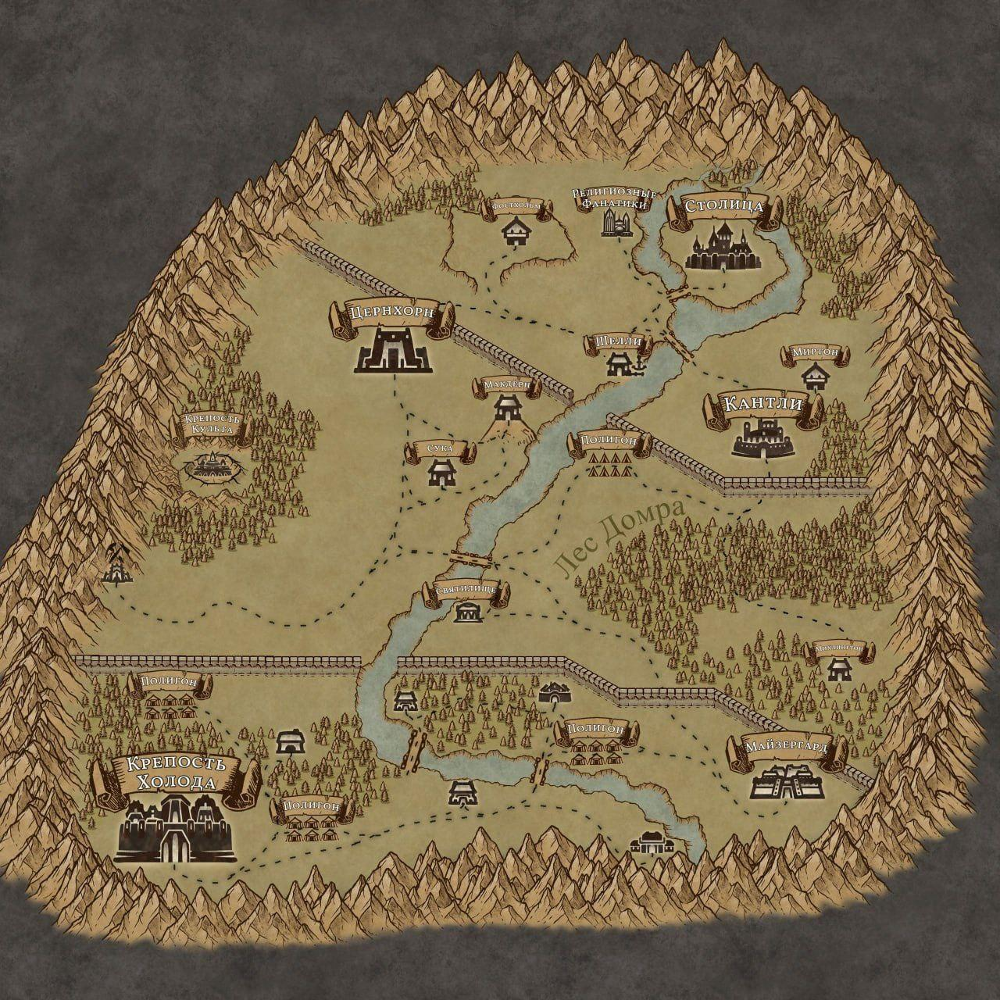

Столица
Главный город Фраустера, где находятся королевский дворец и совет.
Досье Фраустера →Архив · Том I
Иллюстрированная карта из материалов проекта. Отметки привязаны только к подписям, которые видны на самом изображении и подтверждены открытыми досье.
Известные места
Увеличивайте карту кнопками и перетаскивайте её после увеличения. Выберите отметку, чтобы открыть сведения о месте.

Главный город Фраустера, где находятся королевский дворец и совет.
Досье Фраустера →Главный оплот власти Майзервина и резиденция короля Галдвина.
Досье Майзервина →Укреплённая крепость Культа Доронто. Собственное название в открытом досье не указано.
Досье Культа →Это иллюстрированная карта, а не точная географическая схема. Координаты новых мест и подробные досье будут добавлены только после подтверждения автором.